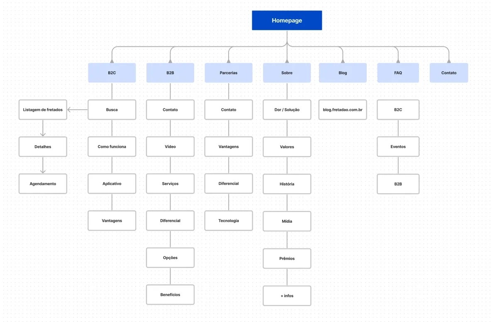
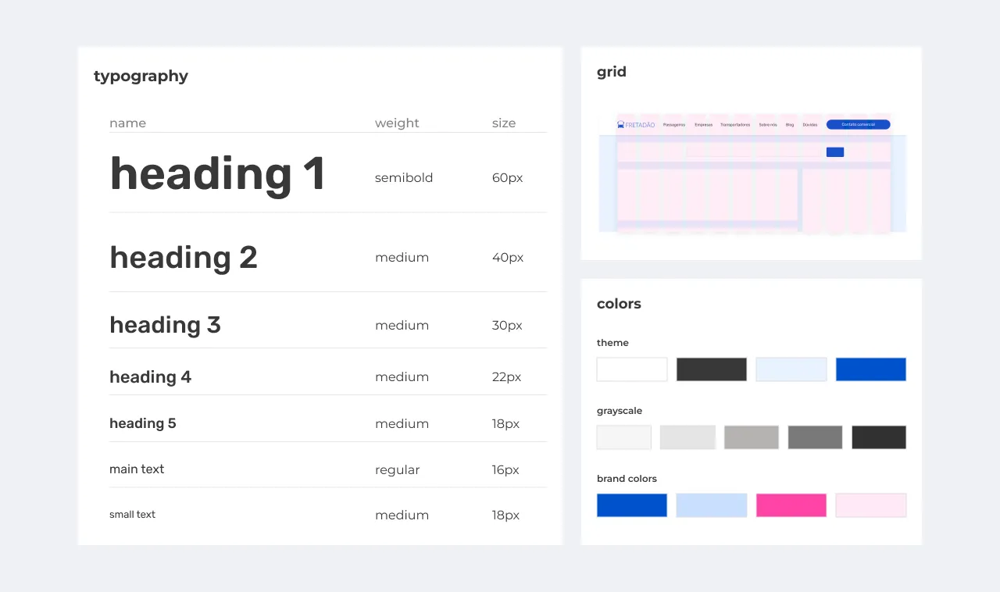
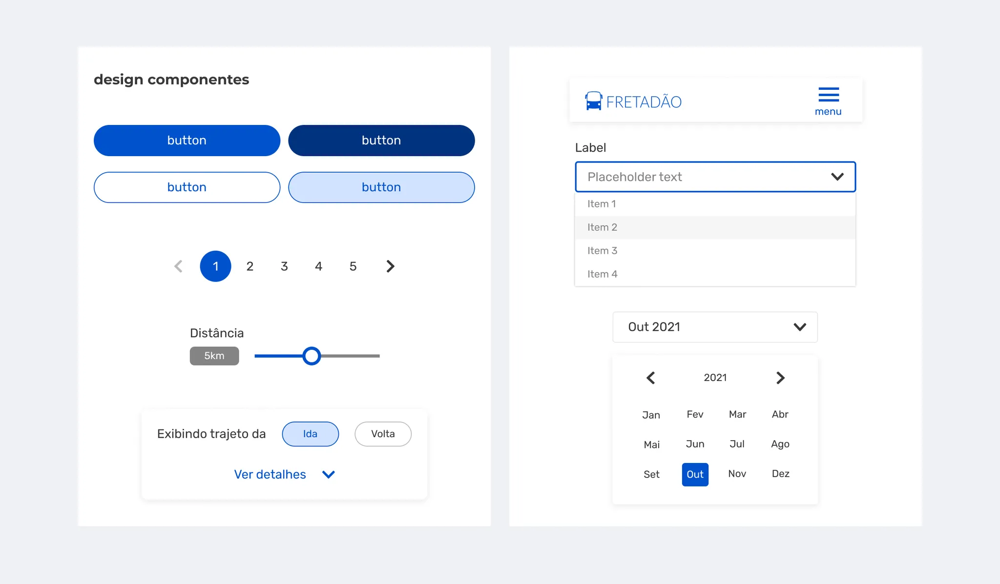
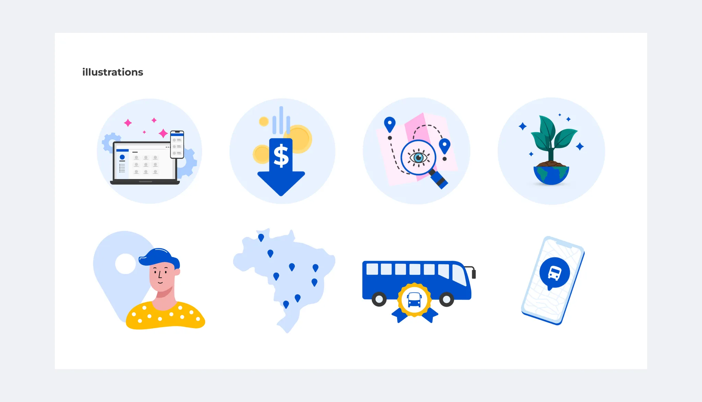
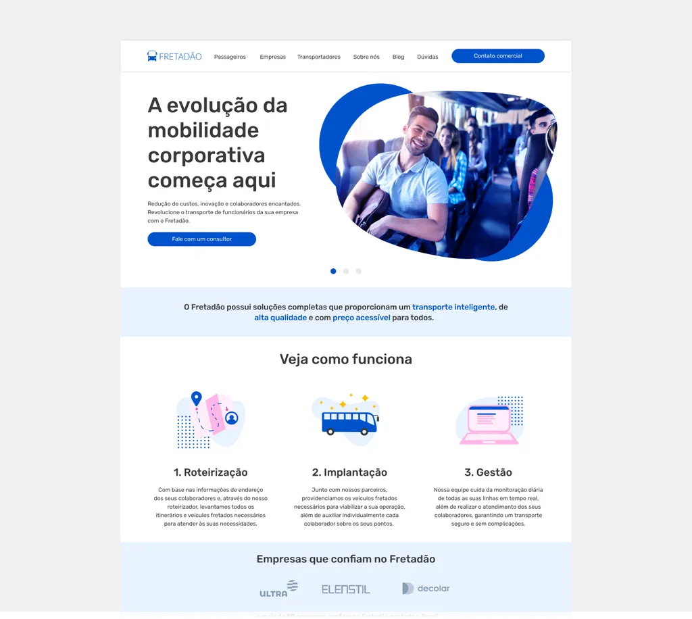
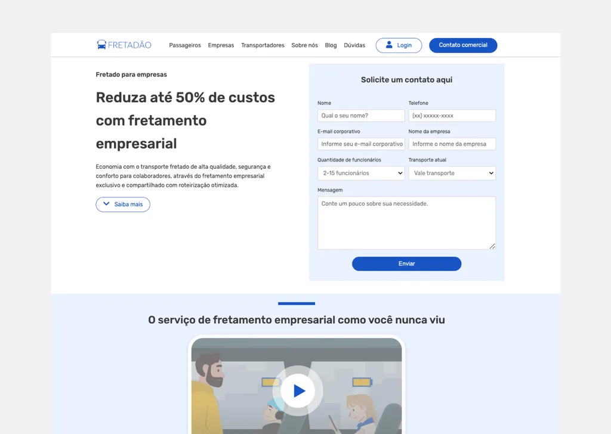

Redesign de Marca e Site
Cliente e objetivo
Fretadão é uma empresa de tecnologia voltada para a área de fretamento e oferece o serviço de planejamento, implantação e gestão da operação de fretado para colaboradores de empresas de médio e grande porte.
Como designer do projeto, minha função era reformular visualmente a marca e criar um protótipo navegável baseado nas discussões feitas pelo time.
O cliente precisava de ajuda com a usabilidade e arquitetura de informação de seu site para torná-lo mais fácil de usar e comunicar as soluções que a empresa entrega ao seu cliente.
Planejamento
O projeto tinha um time enxuto de 3 pessoas, formado pelo CTO da empresa, a analista de marketing e eu. Os principais pontos de definição discutidos foram:
- Como a marca queria ser vista pelo usuário;
- Quais serviços serão apresentados e quais terão mais destaque;
- O que e como devemos nos comunicar com a audiência;
- Redesenhar o site com uma interface amigável e interativa;
- Fornecer mais informações sobre fretamento e serviços oferecidos;
- Simplificar a navegação separando o conteúdo para clientes B2B e B2C.
Arquitetura da informação
O Fretadão oferece diversos serviços tanto para clientes que buscam um fretado individual (B2C), quanto para empresas que precisam fechar um pacote para todos ou uma parte de seu quadro de funcionários.
Um fluxo de usuário foi criado para descrever como o site está estruturado e quais etapas o usuário pode seguir ao usar o site.

Direção de design de interface do usuário
O primeiro passo foi a criação da nova identidade da marca e a criação do manual de identidade visual, veja mais detalhes na publicação do Behance abaixo.
Identidade visual | Fretadão, no Behance ↗
Nesta fase, foi determinado quais foram os componentes de interface cruciais para o projeto e para documentar as decisões, o guia de estilo de UI começava a ser construído.



Resultado
A home foi dividida nas seguintes seções: Carrossel de serviço, como funciona, clientes, vantagens, benefícios para colaboradores, fretado para pessoa física, blog e outros serviços. Veja o site no ar: www.fretadao.com.br

Página B2B
